Para utilizar os ícones do Font Awesome tem duas formas. A primeira é importando os ícones através de links.
Um dos links vai no 'head' do HTML e outro vai no final do 'body' por ser tratar de um JS (JavaScript).
Para pegarmos esses links vamos acessar esse site:
No link acima vamos procurar pelos links final "all.min.css" e "all.min.js". Depois de achar, só copiar e colar aqui.
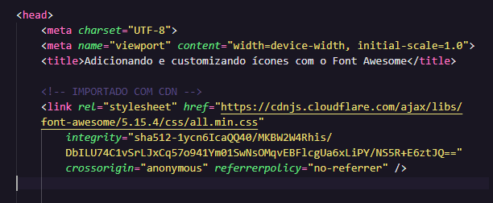
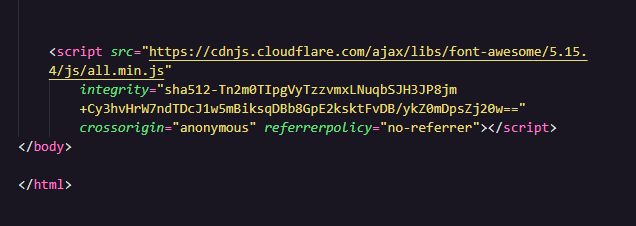
Depois de fazer isso vamos usar o link do Site Font Awesome
Nesse link vamos procurar o que queremos, aqui no exemplo pesquisamos o ícone do facebook
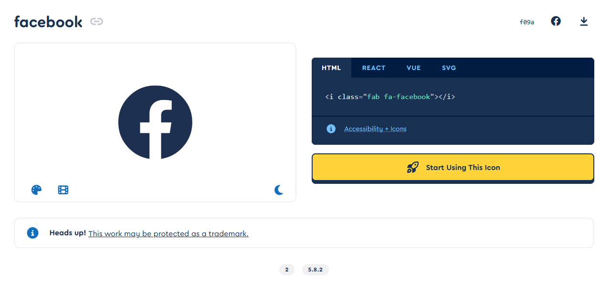
Basta copiar o "i class="fab fa-facebook" e colar no seu projeto, somente fazendo isso já vai funcionar. Depois podemos aumentar o tamanho e trocar a cor a vontade.
Abaixo só coloquei dois para exemplo:
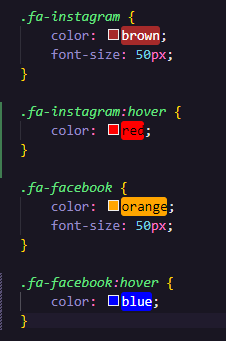
Precisamos ir ao font awesome de novo:
Depois de entrar no site temos que seguir o seguintes passos:
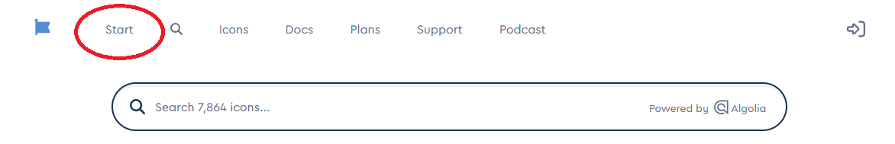
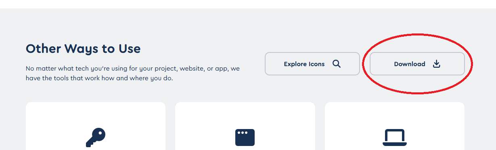
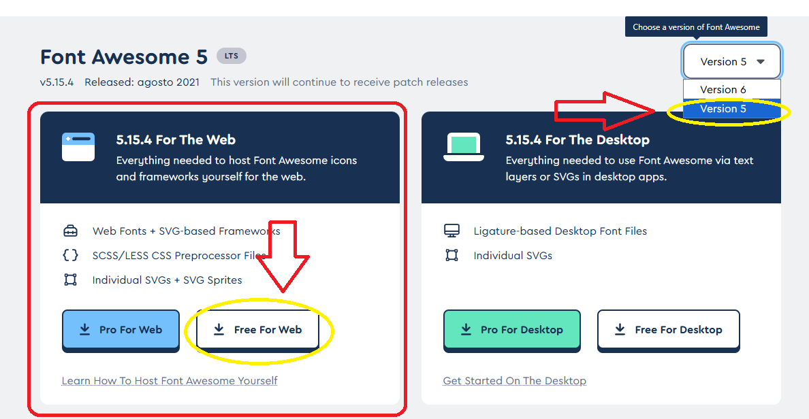
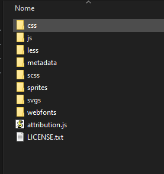
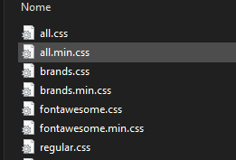
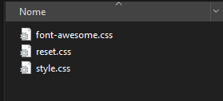
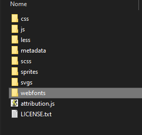
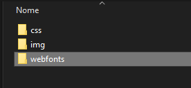
Depois de feito esse processo já podemos colocar os ícones no nosos projeto.
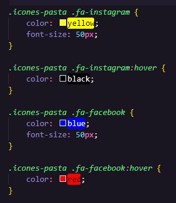